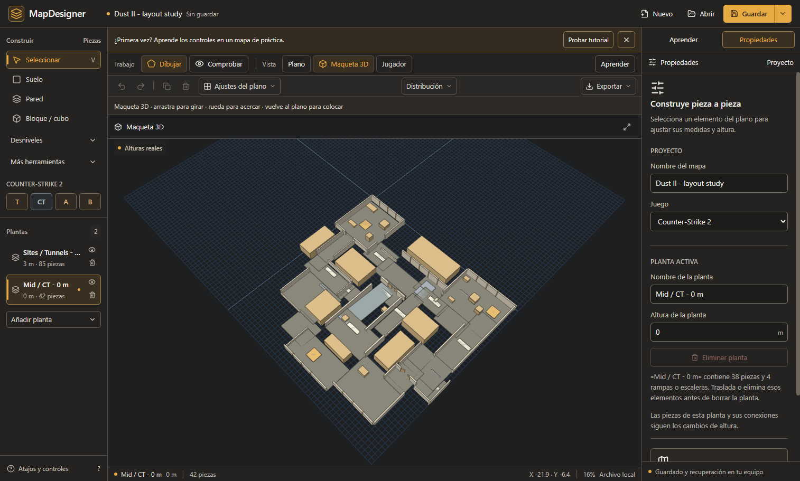

Desktop level design tool
Map Designer
Build a level layout. Explore it at player scale.
Arrange floors, walls and connections in a 2D plan, inspect the space in 3D and walk through the blockout from the player’s perspective.
- Platform
- Windows 64-bit
- Version
- 1.3.0 · Portable
- Workflow
- 2D plan · 3D preview · Player view

A simplified layout study inspired by Dust II, captured in Map Designer 1.3.0.
View full editorPrototype the layout before adding detail
Build the layout
Place floors, walls and blocks. Connect levels with ramps and stairs, and adjust the dimensions and heights of individual pieces.
Inspect it in 3D
Review the shape of the layout and its changes in height. Use the combined plan and 3D view to see both at once.
Explore at player scale
Choose a starting point on the floor plan and walk through the blockout. Inspect routes and spaces from the player’s perspective.
Windows portable
Version 1.3.0 · Windows 64-bit · 139 MiB
Download not yet available.